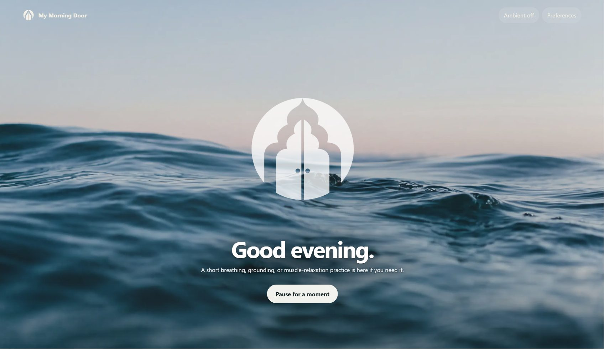
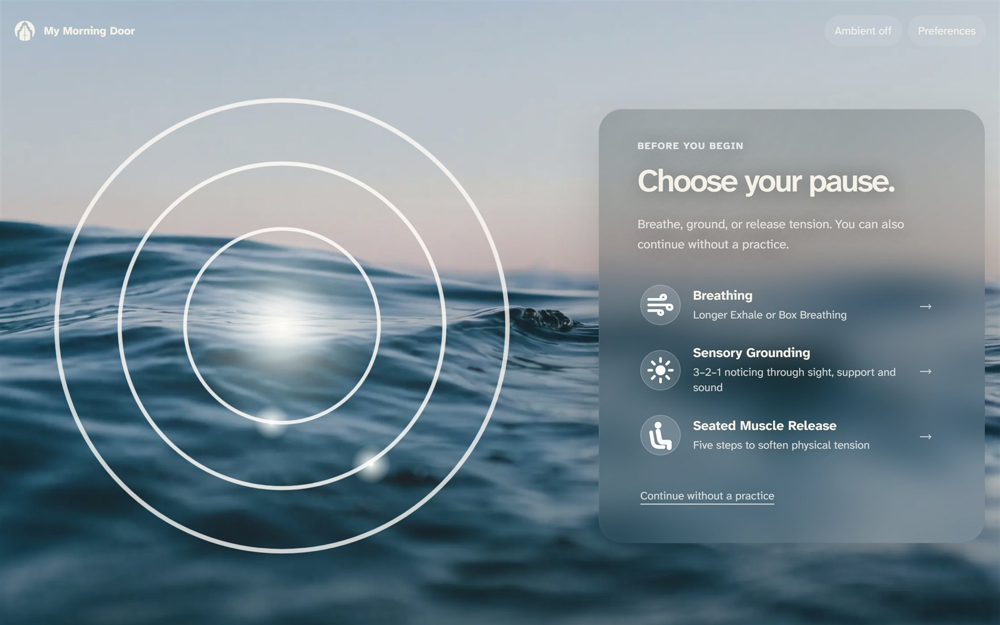
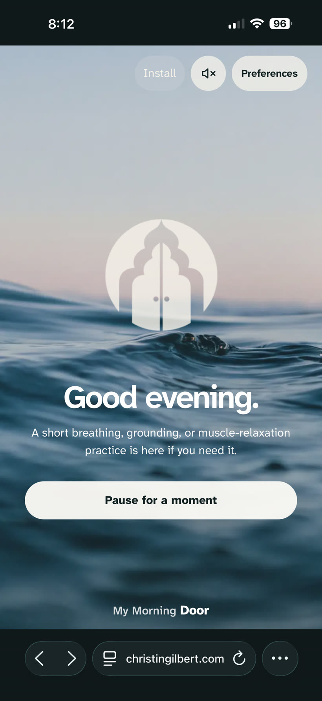
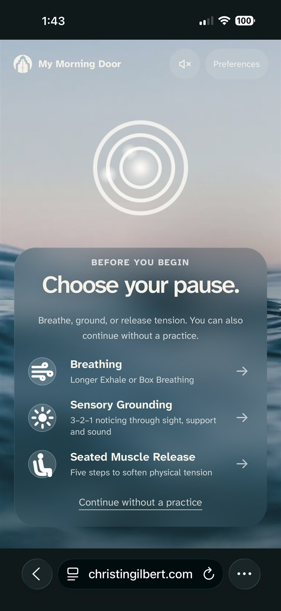
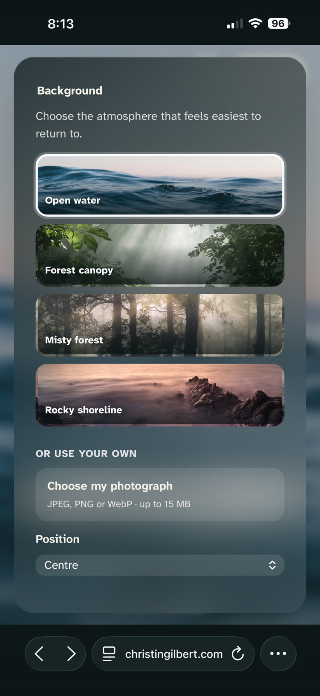
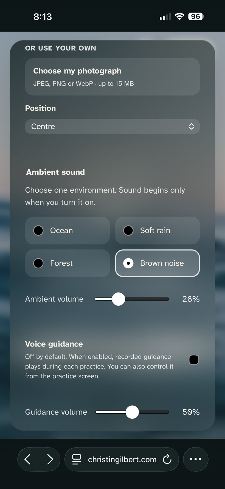
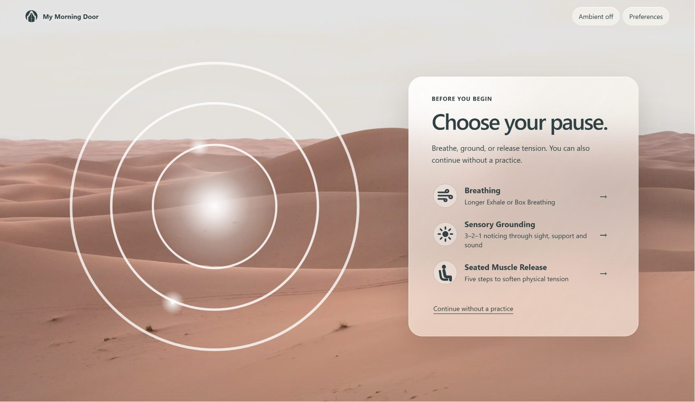
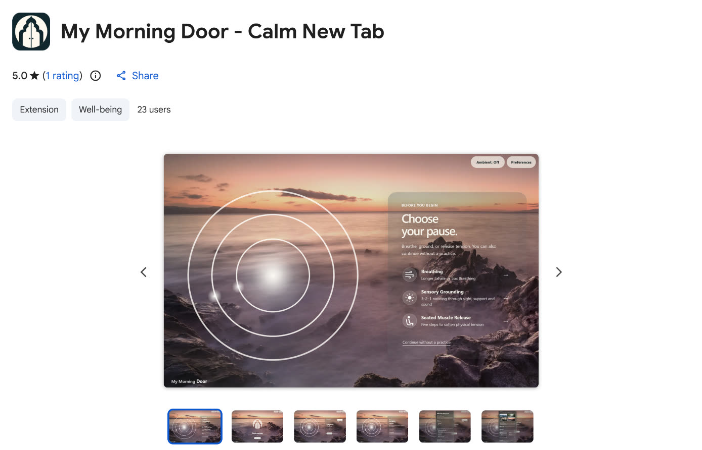

Experience design, interaction design and front-end implementation
My Morning Door.
A quiet doorway before the day starts.
My Morning Door is a Chrome extension that turns the new tab into a short, optional pause before browsing begins. The user can choose breathing, sensory grounding, seated muscle release or continue without a practice. The extension works without sign-in, and users can take or skip a practice without creating a progress record. Preferences stay local and the experience remains untracked.

01 The problem
My Morning Door came from a very ordinary problem: I kept skipping the small things that helped me feel ready for the day.
I love having a morning routine. But the smaller practices, stretching, breathing, grounding and taking one minute before opening the floodgate, were the easiest ones to lose. They were the things I needed most before presentations and meetings. Somehow, they were also the first things to disappear once my day started moving. Most days, I would wake up and walk straight into the day, already thinking about my task list. The ritual I meant to do turned into "morning routine starts tomorrow."
I did not want another task app, reminders, streaks, lists or another system to maintain. I wanted something simpler than that, already in front of me, at the place where my day usually begins.
That became My Morning Door: a Chrome new-tab extension that creates a quiet moment before the user moves into the browser. The experience does not add productivity pressure or ask the user to complete anything. It offers an optional breathing, grounding or muscle-release practice at the point where the day often begins on screen: a new tab.
A lot of wellbeing tools solve that by adding structure, setting an intention and keeping a streak, "come back later." This can work for some people. For this product, I made the brief to stay small. Since a browser was already a place we had to pass through, could it offer one moment of regulation before the day took over, then get out of the way?
02 The principle
The line I kept coming back to is that the product had to help without becoming another thing to keep up with.
My design rationale was that the product could offer a short pause but it can't measure the pause. There are no tasks, no mood logs or records of whether someone had successfully completed the ritual. It could remember someone's favourite photographic scene, motion preference, volume and sound choice.
-
1
Always optional
The address bar at the top of the browser still works like a normal new tab and "Continue without a practice" stays visible. Skipping the practice is not treated like failure. It is just one of the valid ways to use the product.
-
2
Support without tracking
The extension can remember preferences but it cannot remember intentions, tasks, counts, streaks or a history of use. While remembering those preferences reduces friction, tracking pauses, counts or streaks can change the pause into another thing to manage.
-
3
Quiet by default
The extension is built with voice guidance and four nature-based ambient sounds. Users can modify the ambient sound in Preferences but ambient sound and voice guidance are off by default.
-
4
Ambient audio without tab or app dependency
I have seen how often people use brown noise, rain sounds or long ambient videos to help them focus. I wanted My Morning Door to support that same pattern without requiring another tab or app. The sound can stay with the user in the background as they continue their day, and if they prefer silence, the page can stay quiet. Both functions are part of the design.
-
5
Local by design
I designed My Morning Door so it does not require an account. There is no sign-in, no analytics, no remote code, no browsing-history access and users' preferences stay in the browser. Privacy is part of the interaction model because the product is built around a private moment at the start of the day.
03 The experience
The goal is to make the pause easy to enter and easy to leave.
When users click the + browser sign at the top of the page, they will be welcomed with a photographic scene, a simple greeting and a clear invitation to pause. The experience gives the user one moment to choose how they want to continue. From there, the user can start with a short breathing, grounding or seated muscle-release practice. They can also continue directly into the browser. The full arrival appears on the first tab after a long gap, such as a morning or a return from lunch; every other tab opens as a quieter resting threshold.
The practice screens stay simple: one direction at a time, large readable text, optional voice guidance and ambient sound only when the user chooses to turn it on.
-
Open a new tab
-
Arrival or resting thresholdA photographic scene, a greeting and an invitation to pause
-
Choose a path
-
Continue without a practiceBrowserExits here
-
BreathingChoose a rhythmLonger Exhale or Box BreathingPractice screenOne prompt at a time
-
Sensory GroundingChoose a paceGuided or self-pacedPractice screenOne prompt at a time
-
Seated Muscle ReleaseStart the practiceFive-step releasePractice screenOne prompt at a time
-
-
Complete or continueThe three practices rejoin here
-
Optional sound bridgeKeep the ambient sound, or finish quietly
-
Browser
User flow
Four paths, and one of them is leaving
Three of the four paths lead to a practice screen that shows one prompt at a time. The fourth is simply continuing into the browser, and it sits at the same level as the others rather than tucked underneath them. Leaving is treated as a real choice.
The three practices rejoin at the same place: one decision about whether the sound comes with the user, then the browser.

Arrival
Pause for a moment, or continue
The arrival screen gives the user one clear choice.
The pause is offered through three short practices: breathing, sensory grounding and seated muscle release. There is also a visible option to continue without a practice. This option is important because users can exit without the ritual, and without pressure. The three practices are intentionally simple:
- Breathing: Longer Exhale is the default, with a simple inhale and longer exhale. Box Breathing is available for users who prefer a more structured rhythm.
- Sensory Grounding: a short orientation practice that uses external sensory cues, three visual details, two points of physical support and one sound, to bring attention back to the present environment.
- Seated Muscle Release: a five-step practice that guides the user through small releases in the shoulders, hands, jaw, legs and breath while staying seated.


Responsive
The same pause on a smaller screen
My Morning Door was built first as a desktop Chrome extension because the new tab was the threshold I wanted to design for: the place where our day starts moving on screen.
The mobile web version extends that same pause to a smaller screen without turning the product into a full meditation app like Calm or Insight Timer. The goal was to keep the ritual optional and easy to leave.


Personalisation
A few quiet choices
Personalisation stays intentionally light. The page can use one of the built-in scenes or a photograph from the user's own device, but it does not ask them to keep adjusting the experience. Ambient sound is available, but it stays silent until turned on. Voice guidance follows the same rule: present when useful, absent when it is not.
04 Accessibility
The visual direction for My Morning Door depended on a calming atmosphere with full-screen photography, glass surfaces, soft motion, ambient sound and quiet contrast.
Those same choices created the main accessibility challenge because contrast level in visual content is variable by nature. A text treatment that works over a dark ocean image may fail over snow, desert or an uploaded personal photo while glass surfaces can soften the interface too much. Motion can support orientation for one user and create friction for another. Sound can help someone settle into work but it can also become intrusive if it starts unexpectedly or continues without control.
To keep the experience usable across those conditions, accessibility was treated as part of the design system.
- Atkinson Hyperlegible Next, bundled locally
- WCAG AA text contrast across built-in photographic scenes
- Adaptive glass surfaces based on image brightness
- Full, Gentle and Still motion modes in Preferences
- Support for the browser's reduced-motion setting
- Ambient sound and voice guidance off by default
- User-controlled sound, guidance and volume settings
- 44px minimum touch targets
- Visible keyboard focus states
- Screen-reader announcements for key state changes
- Reduced-transparency fallback for glass surfaces
Contrast was tested across the built-in photographic scenes and the glass treatment adapts to the image behind it. If the background has darker ocean and forest scenes, it will use lighter interface text while lighter snow and desert scenes use darker interface text.
- Keyboard users can see where they are
- Main controls use visible :focus-visible states. When someone tabs through buttons, inputs or focusable headings, the focused item gets a visible outline.
- Screen-reader users receive key updates
- A hidden aria-live="polite" region. The extension writes updates into it so screen readers can announce changes like voice guidance, selected rhythm, completed practice, sound stopped, etc.
- Glass effects respect reduced-transparency preferences
- @media (prefers-reduced-transparency: reduce). If the user's system or browser requests reduced transparency, the glass blur is removed and replaced with more solid surfaces.

Adaptive contrast
Darker text over a lighter scene
This is the same arrival panel as Fig. 03, over the desert scene instead of the ocean. The interface text switches from light to dark and the glass sits more solidly on the image, so the text keeps its contrast either way. The choice follows the brightness of the photograph behind it rather than a fixed theme.
05 Motion and sound architecture
Motion is adjustable through Full, Gentle and Still modes and the browser's reduced-motion setting is respected as an additional system-level preference.
Sound follows the same principle. Ambient sound and voice guidance are off by default. Users can turn them on or adjust volume in Preferences and choose whether sound continues after the pause. Voice guidance starts at a lower volume and ambient sound ducks in the background while voice guidance plays so the two do not compete.
The sound architecture had one main requirement: a selected ambient sound should continue without restarting or stacking across tabs, while remaining easy to stop. Chrome audio needed a shared audio engine. If ambient sound lived inside each visible new-tab page, it could stop when the tab closed or restart in every new tab.
My Morning Door uses Chrome's approved Manifest V3 offscreen document API for audio playback. The extension's service worker routes each sound command to the offscreen document, which owns the bundled ambient audio, so a single instance of the sound keeps playing as tabs open and close. The user can pause, adjust volume or stop sound from the new-tab control or the extension toolbar popup.
-
New tab control or toolbar popupPause / volume / stop
-
Service workerRoutes audio commands
-
MV3 offscreen documentOwns bundled ambient playback
-
Shared audio engineCrossfades loop + manages session
06 Scope decisions
The pause at the heart of My Morning Door started as a small feature inside Nookfare, a sensory-aware accommodation planning concept designed to reduce decision overload when comparing places to stay.
Instead of trying to build the full travel product first, I pulled out one complete interaction, which is a short pause before entering a decision-heavy space. That became the scope for the My Morning Door extension.
From there, I had to lay out the constraints for the product:
- No tasks, streaks or completion counts
- No accounts or sign-in
- No history of completed practices
- No analytics, servers or trackers
- No remote code or remote fonts
- No host permissions or browsing-history access
The extension uses two Chrome permissions: offscreen, so a chosen sound can continue while the user browses, and storage, so the current sound session can be mirrored in chrome.storage.session if Chrome tears down the idle audio document.
Nothing is synced. The extension ships its interface, fonts, imagery and audio inside the package.
Building My Morning Door clarified one part of my design practice: cognitive accessibility is about making information easier to read, and also about reducing the extra steps a product can quietly create around the user.

Shipped
Live on the Chrome Web Store
Published as a Manifest V3 extension under Extension and Well-being, with the built-in scenes as the listing screenshots. View the listing (opens in a new tab), or try the web version (opens in a new tab) without installing anything.
Notes on this page
Designed and built as a Manifest V3 Chrome extension in vanilla HTML, CSS and JavaScript. Claude Code and Codex assisted with implementation. The product principle, accessibility decisions and copy are mine. A fuller account is available on the AI use and attribution page.
Built-in photographic scenes are my own photography and ship inside the extension package. Users can also upload their own local background. The ambient sounds and guided-voice audio are bundled and licensed. The interface uses Atkinson Hyperlegible Next, licensed under the OFL 1.1.
The rest of this site runs on the Plum & Linen design system, which has its own WCAG AA contrast audit.
My Morning Door is live on the Chrome Web Store. The breathing, grounding and muscle-release practices are optional general-wellness supports. They are not intended for medical treatment. A person can stop, skip the practice or choose something else at any time.
Role: experience design, interaction design, accessibility direction, visual design, photography, sound experience, copywriting and front-end implementation.